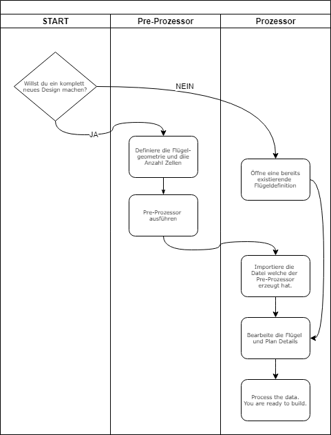
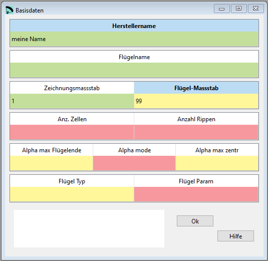
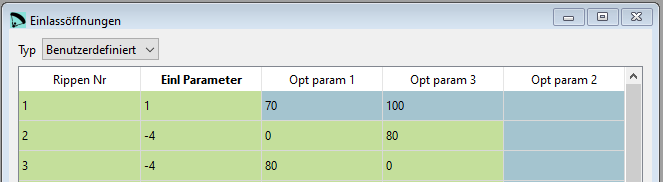

Einführung zu lepg¶
Arbeitsablauf¶
Lepg ist eine graphische Oberfläche zum Berechnungsprogramm lep welches von Pere Casellas geschrieben wurde. Ziel von Lepg ist es eine möglichst einfache Oberfläche zur Verfügung zu stellen welche die Bearbeitung der Daten ermöglicht welche anschliessend von lep für die Flügelberechnung verwendet werden.
Der Arbeitsablauf sieht so aus:

Eingabefelder¶
Lepg hilft bei der Bearbeitung der Daten und nimmt dem Benutzer die Formatierung der Daten Dateien welche lep benötigt ab. Aber so ganz ohne Hintergrundwissen geht es nicht, ein wenig muss man sich in der Datenstruktur von lep schon auskennen.
Der farbige Hintergrund in den Eingabefelder zeigt das Resultat der Werte Prüfung welche im Hintergrund läuft:
grün: die Werte liegen innerhalb des definierten Wertebereiches
gelb: lepg kann nicht mit Sicherheit feststellen dass der Wert gültig ist. In obigem Bild wurde ein Flügel-Massstab von 1:99 eingegeben. Dieser Wert liegt ausserhalb des Bereiches welcher für die Werteprüfung festgelegt wurde, kann aber in Spezialfällen trotzdem sinn machen.
rot: hier ist definitiv etwas falsch
Nicht immer müssen in den Fenstern alle Parameter ausgefüllt werden:
grau hinterlegte Felder zeigen an dass diese Felder für den aktuellen Parametertyp nicht benötigt werden.
Die Online Hilfe versucht die wichtigsten Themen zu erklären, wer es genau wissen will kommt nicht darum herum auf der Webseite von Pere Laboratori d'envol website nachzuschauen.